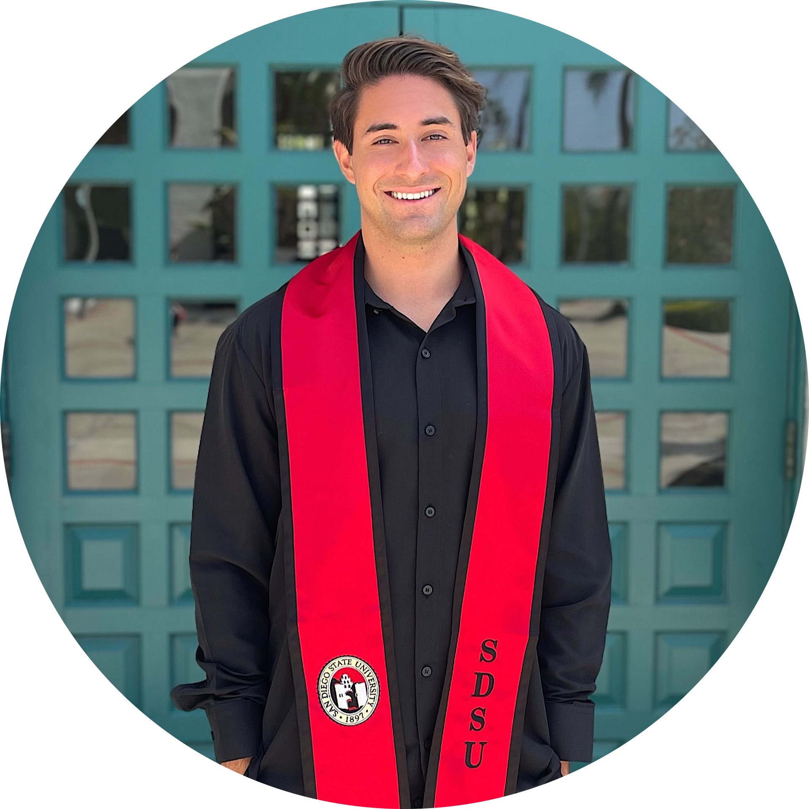

|  | Brandon ReileySan Diego State Graduate Recent graduate with experience in Java and exposure to JavaScript, |
| Dates | Work |
|---|---|
| 2021-2022 | Junior Consultant at EPI-USE America, Inc. |
| 2021 | Valet at Montage International |
| 2019 | Jr. Structured Cabling Technician at Willenworks IT Services & Support |
| 2018 | Valet at Ace Parking |
| Java | ⭐️⭐️⭐️⭐️ |
| JavaScript | ⭐️⭐️ |
| Python | ⭐️⭐️ |
| iOS Development | ⭐️⭐️ |
| Web Development | ⭐️ |